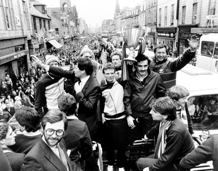

Chương 15

ăm 1981, với tư cách đương kim vô địch Scotland, Aberdeen bước ra đấu trường châu lục, tranh tài tại Cúp C1. Họ giành thắng lợi trước Austria Vienna của Áo, nhưng xui xẻo bốc thăm gặp trúng Liverpool tại vòng hai.Bóng đá Anh lúc bấy giờ hô phong hoán vũ ở châu Âu, mà Liverpool lại là ông vua nước Anh.Thật là vừa ra đến ngõ đã gặp ngay hổ báo.
Trước ngày hai đội gặp nhau, Alex Ferguson cùng Archie Knox đến Anfield dự khán trận Liverpool - Middlesbrough.Tại đây, họ được cựu HLV Bill Shankly đón tiếp. “Chào Alex, nghe nói chú đang rất thành đạt ở ngoài Bắc hả?”, Shankly xởi lởi, “Chú đến đây do thám đội bóng vĩ đại của tôi chứ gì? Ôi chà, đội nào cũng cử thám báo đến đây cả.”
Chuyến đi “do thám” cuối cùng chẳng được lợi ích gì. Liverpool đơn giản là quá mạnh. Họ thắng 1-0 tại Pittodrie, trước khi “làm gỏi” Aberdeen 4-0 trong trận lượt về.Alex nổi trận lôi đình, khiến học trò chết khiếp.Tối hôm ấy, khi đi ăn, cả đội đều lấm lét nhìn HLV, không ai dám nói một câu, cười một tiếng. Về phần Liverpool, họ vào đến tận chung kết, đánh bại Real Madrid, giành Cúp C1 thứ ba trong lịch sử.
Mùa 1981-1982, Aberdeen thành công hơn ở Cúp C3 (UEFA Cup).Ngay vòng một, đội đã gây nên cú sốc khi loại Ipswich Town với tổng tỷ số 4-2. Gọi là “cú sốc” vì lúc bấy giờ, Ipswich Town, dưới sự dẫn dắt của HLV Bobby Robson, được coi là đội bóng mạnh thứ nhì ở Anh, chỉ đứng sau Liverpool. Họ cũng đang là đương kim vô địch Cúp C3. Vào vòng 2, Aberdeen thắng Arges Pitesti của Romania 3-0 ở lượt đi, song trong trận lượt về lại tỏ ra chủ quan, chỉ sau 45 phút đã bị gác hai trái. Bị HLV mắng cho tan nát trong giờ nghỉ, họ mới quyết tâm hơn, và san bằng được tỷ số 2-2. Tuy sau đó không vượt nổi Hamburg của “hoàng đế” Franz Beckenbauer, nhưng lần này, các học trò của Alex có thể ngẩng cao đầu.Họ chỉ thua khít khao 4-5 sau hai lượt trận, trước đội bóng chỉ một năm sau sẽ lên ngôi bá chủ châu Âu.
Sau thành tích giành Cúp QG năm 1982, Aberdeen được dự Cúp C2. Về danh nghĩa, Cúp C2 chỉ đứng sau C1, cao hơn C3, nhưng thực chất, chất lượng Cúp C3 ngang ngửa C1[1], còn C2 lại dễ đoạt nhất. Tuy vậy, Cúp C2 mùa 1982-1983 lại là nơi “ngàn sao tụ hội”, với sự có mặt của hàng loạt đại gia như Bayern Munich, Tottenham, Inter Milan, và đặc biệt: Cả Barcelona lẫn Real Madrid (Real vô địch Cúp QG, trong khi Barca là đương kim giữ Cúp C2).
Trong vòng sơ loại, Aberdeen trút mưa gôn vào lưới FC Sion (Thụy Sỹ), thắng 7-0, rồi 4-1. Đội tiếp tục giành chiến thắng trước Dinamo Tirana (Albania) và Lech Poznan (Ba Lan). Thử thách thật sự chỉ đến ở vòng tứ kết, khi đối thủ là Bayern Munich. Alex Ferguson và Archie Knox thay phiên nhau đến Đức, theo dõi Bayern suốt mấy trận liền. Họ cũng thu băng những trận đấu mới nhất của Bayern, bắt cầu thủ phải xem đi xem lại nghiên cứu. Sự chuẩn bị kỹ lưỡng đem về kết quả: Với một thế trận phòng thủ chặt chẽ, Aberdeen phong tỏa được Paul Breitner và Karl-Heinz Rummenigge, cầm hòa đối phương 0-0 ngay tại cầu trường Olympic, nơi mà mới vòng trước đó, “Hùm Xám” đã dễ dàng trút bốn bàn vào lưới Tottenham Hotspur. Sau trận đấu, tổng giám đốc Bayern Uli Hoeness tấm tắc “Aberdeen giỏi hơn cả Inter, Barcelona, và Real Madrid”.Hiển nhiên, đó chỉ là một đòn tâm lý nhằm đưa đối thủ lên mây xanh.Alex Ferguson không đời nào mắc mưu, ông vẫn đòi hỏi học trò phải tập trung tuyệt đối. Một vài cầu thủ trốn thầy đi ăn mừng ngay lập tức bị phạt.
Hai tuần sau, hai CLB tái đấu trong một trận cầu đầy kịch tính.Bayern gây bất ngờ bằng cách đẩy hậu vệ trái cao ngòng Pflugler lên tuyến tiền vệ, rồi tập trung nhồi bóng bổng cho anh ta.Ngay phút thứ 10, tỷ số đã được mở cho đội khách. Nhận bóng từ Breitner, Augenthaler lừa qua một hậu vệ Aberdeen, trước khi tung cú sút trái phá, đưa bóng vượt khỏi tầm cản phá của thủ thành Jim Leighton. Neil Simpson đệm bóng cận thành quân bình tỷ số, trước khi Pflugler đá nối tuyệt đẹp tái lập cách biệt. Nhận thấy hậu vệ phải Stuart Kennedy không sao kèm nổi Pflugler, Alex liền thay đổi chiến thuật: Ông đẩy hậu vệ trái Rougvie sanh cánh phải, kéo Neale Cooper về trấn giữ cánh trái, đồng thời tung tiền vệ John McMaster vào thay thế Kennedy. Aberdeen bắt đầu kiểm soát được thế trận, nhưng bỏ lỡ cơ hội gỡ hòa, khi Eric Black đội đầu trúng xà ngang.
Trận đấu chỉ còn 13 phút nữa là kết thúc, tỷ số vẫn là 1-2 nghiêng về Bayern. Alex đánh con bài cuối cùng: Rút tiền vệ Neil Simpson ra sân, thay thế bằng trung phong John Hewitt. Ngay sau khi Hewitt, một Solskjaer của Pittodrie, vào sân, Aberdeen được hưởng quả đá phạt chếch về cánh phải. Trong một pha dàn xếp cực kỳ láu cá, Strachan và McMaster giả vờ tranh nhau sút phạt. Trong lúc đối thủ mất tập trung, Strachan bất thần câu bóng vào vòng cấm địa, và McLeish bật cao đánh đầu gỡ hòa 2-2.Chưa kịp định thần, đội khách lại trúng thêm một đòn chí tử: Chỉ 30 giây sau, đến lượt Black đánh đầu, thủ thành Bayern đẩy được bóng ra, “gà son” Hewitt có mặt đúng lúc, đá bồi vào lưới, đưa Aberdeen lần đầu vượt lên dẫn trước. Bayern dồn lên, áp đảo toàn diện trong những phút cuối cùng, nhưng Aberdeen tử thủ thành công, duy trì được thắng lợi sít sao.
Sau trận cầu nghẹt thở với Bayern, Aberdeen dễ dàng đánh bại Waterschei của Bỉ. Trận bán kết lượt về là trận cuối cùng trong đời cầu thủ của Stuart Kennedy: Anh dính phải chấn thương nặng đến độ phải giã từ sân cỏ. Tuy Kennedy không bao giờ ra sân được nữa, để tri ân những đóng góp của hậu vệ này cho CLB, Alex Ferguson vẫn điền tên anh vào danh sách dự bị cho trận chung kết. Đối với cầu thủ, Alex luôn đối xử một cách có tình có nghĩa như vậy, như sau này, ông chờ đợi Ruud Van Nistelrooy suốt một năm cho đến khi anh bình phục chấn thương, và nhất quyết không bỏ rơi “phế nhân”Ole Gunnar Solskjaer. Nếu cầu thủ không chống đối hoặc phản thầy, Alex không bao giờ phụ họ.
Chờ đón Aberdeen trong trận chung kết ở Gothenburg, Thụy Điển, là CLB vĩ đại nhất thế kỷ 20 Real Madrid. Không còn "vô đối" như những năm 1950, nhưng Real vẫn có trong đội hình nhiều ngôi sao sánggiá của ĐTQG Tây Ban Nha, và được dẫn dắt bởi Di Stefano huyền thoại. Trước những trận gặp Celtic hay Rangers, Alex Ferguson luôn tạo ra không khí căng thẳng, buộc cầu thủ phải ra sân với tinh thần một mất một còn, nhưng lần này, đối mặt với đối thủ ở đẳng cấp cao hơn mấy bậc, ông thừa hiểu càng làm căng sẽ càng phản tác dụng. Thay vì gây áp lực, Alex dặn học trò hãy cứ thư giãn, thoải mái, xem như sắp sửa thi đấu một trận giao hữu, thắng thua không thành vấn đề.
Nhận lời mời của Alex, HLV ĐTQG Scotland, Jock Stein, bay cùng toàn đội Aberdeen sang Gothenburg. Theo gợi ý của Stein, Alex mua một chai whisky đến tặng Di Stefano. Hành động này một mặt thể hiện thái độ lịch sự, cũng như lòng tôn kính đối với một huyền thoại sân cỏ, mặt khác nhằm mục đích khiến cho Stefano chủ quan khinh địch. Cúi đầu, cung kính tặng rượu đối phương, chẳng phải là muốn nói: Tôi không dám mong gì hơn, được đối đầu cùng ngài đã là diễm phúc của đời tôi, hay sao?
11 tháng năm, 1983: Ngày trọng đại nhất trong lịch sử Aberdeen FC. Giữa trời mưa tầm tã, đội bóng Scotland nhanh chóng vượt lên dẫn trước. Phút thứ bảy: Từ đường phạt góc của Strachan, McLeish đánh đầu, bóng trúng vào hậu vệ đối phương bật đến chân Black. Trong tư thế đối mặt thủ môn đội bạn, Black dễ dàng lập công, mở tỷ số 1-0. Song chỉ tám phút sau, McLeish trở thành tội đồ. Anh chuyền về quá nhẹ, buộc Leighton phải lao ra phạm lỗi với Santillana trong vòng cấm. Juanito bình tĩnh thực hiện thành công quả phạt đền, đưa trận đấu về thế cân bằng. Với tinh thần chẳng có gì để mất, Aberdeen có phần lấn lướt trong thời gian còn lại, nhưng sau 90 phút, không đội nào ghi thêm được bàn thắng. Trong những phút cuối cùng của giờ đấu chính thức, Black bị chấn thương, buộc phải rời sân, nhường chỗ cho John Hewitt.
Bước vào hiệp phụ, Real Madrid bắt đầu có dấu hiệu xuống sức, trong khi Aberdeen càng đá càng hăng. Peter Weir liên tục có những pha dốc bóng thần tốc, xé nát hàng thủ “kền kền trắng”. Phút 112, Weir phất bóng sang cánh trái cho McGhee. Anh này dấn thêm mấy nhịp, trước khi căng ngang cho Hewitt bay người đánh đầu: 2-1! Người hùng trận bán kết lại một lần nữa bừng sáng; Aberdeen trở thành CLB Scotland thứ ba giành cúp Châu Âu[2].Tiếng còi dứt trận vừa vang lên, Alex Ferguson bật dậy, chạy ra sân chia vui cùng cầu thủ. Không may, ông vấp phải vũng nước, té bổ nhào, bị Archie Knox đi sau dẫm ngay lên người!
“Aberdeen có những thứ mà tiền không mua được” HLV đội thua cuộc, Di Stefano, nhận định “Họ có tinh thần huynh đệ chi binh, tất cả như anh em trong một gia đình”.Thua Aberdeen, Real của Stefano trở thành…vua hạng nhì. Mùa giải năm đó, họ thất bại ở chung kết Cúp QG, chung kết Cúp C2, chung kết Cúp LĐ[3], đồng thời thua ở Siêu Cúp QG, và đứng thứ hai tại La Liga!
Ngày hôm sau, tất cả các trường học ở miền Đông Bắc Scotland đều cho học sinh nghỉ học, đóng cửa ăn mừng. Khi Aberdeen trở về quê nhà, nửa triệu người hâm mộ tràn ra đường phố đón chào họ. Giao thông khắp nơi đều tắc nghẽn. Toàn đội đứng trên xe buýt mui trần, diễu hành từ trung tâm thành phố đến SVĐ Pittodrie.Vinh quang chưa chấm dứt ở đấy. Sáu tháng sau, Aberdeen giành Siêu Cúp Châu Âu, sau chiến thắng 2-0 trước nhà vô địch C1 Hamburg. Cho đến nay, đây vẫn là lần duy nhất trong lịch sử, một CLB Scotland đăng quang Siêu Cúp…
Trong những năm tiếp theo của “kỷ nguyên Ferguson”, Aberdeen còn gây ấn tượng mạnh trên đấu trường châu Âu thêm hai lần nữa. Mùa 1983-1984, họ tiếp tục thi đấu thành công tại Cúp C2, song phải dừng bước trước Porto ở bán kết, vỡ mộng bảo vệ danh hiệu vô địch. Mùa 1985-1986, đội vào đến tứ kết cúp C1 gặp Gothenburg. Sau hai lượt trận đều hòa: 0-0 ở Thụy Điển, 2-2 ở Scotland, Gothenburg giành quyền đi tiếp theo luật bàn thắng sân khách.

Diễu hành ăn mừng Cúp C2 năm 1983 (ảnh: Vivalafifa.wordpress.com)
[1]Theo luật cũ, chỉ đội VĐQG mới được dự Cúp C1. Hãy tưởng tượng nếu như Cúp C1 ngày nay vẫn dùng luật đó: Ở Anh, trường hợp Manchester City vô địch, Manchester United, Arsenal, và Chelsea xếp kế sau, sẽ chỉ có City dự Cúp C1, 3 đội kia đều dự C3. Nếu vậy, C3 xem ra còn khó nhằn hơn cả C1.
[2] Celtic giành Cúp C1 năm 1967, Rangers đoạt Cúp C2 năm 1972.
[3] Cúp LĐ Tây Ban Nha là một giải đấu “yểu mệnh”, chỉ tồn tại trong bốn mùa từ 1982 đến 1986.